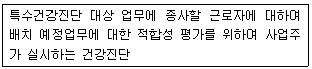
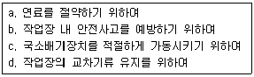
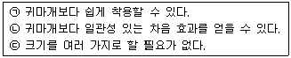
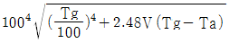
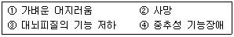

1과목: 산업위생학개론
1. 다음 중 재해의 원인에서 불안전한 행동에 해당하는 것은?
2. 산업안전보건법상 다음 설명에 해당하는 건강진단의 종류는?

3. 다음 중 위생산업의 정의에 있어 중요 4가지 활동요소에 해당하지 않는 것은?
4. 15℃ 을 유지해야 하는 PCB회로 기판 조립라인에서 탈지작업을 위해 트리클로로에틸렌(TCE)을 사용한다. 탈지조에서 방출되는 TCE의 작업환경측정 농도가 150mg/m3이었다면, 이 농도의 ppm농도는 약 얼마인가? (단, TCE의 분자량은 131.39이다.)
5. 다음 중 사무실 공기관리 지침상 관리대상 오염물질의 종류에 해당하지 않는 것은?(2020년 01월 개정된 규정 적용됨)
6. 국소피로의 평가방법에 있어 EMG를 이용한 결과에서 피로한 근육에 나타나는 현상으로 틀린 것은?
7. 다음 중 재해예방의 4원칙에 관한 설명으로 틀린 것은?
8. 다음 중 교대근무제에 관한 설명으로 옳은 것은?
9. 다음 중 시대별 산업위생의 역사가 올바르게 연결된 것은?
10. 근골격계질환 평가 방법 중 JSI(Job Strain Index)에 대한 설명 중 틀린 것은?
11. 다음 중 산업안전보건법에 따라 제조ㆍ수입ㆍ양도ㆍ제공 또는 사용이 금지되는 유해물질에 해당되지 않는 것은?
12. 화학물질 및 물리적인자의 노출기준에 있어 용접 또는 용단시 발생되는 용접흄이나 분진의 노출기준으로 옳은 것은?
13. 다음 중 실내공기의 오염에 따른 건강상의 영향을 나타내는 용어와 가장 거리가 먼 것은?
14. 어느 근로자의 1시간 작업에 소요되는 에너지가 500kcal이었다면, 작업대사율은 약 얼마인가? (단, 기초대사량은 60kcal/h, 안정시 소비되는 에너지는 기초대사량의 1.2배로 가정한다.)
15. 다음 중 산업 스트레스의 반응에 따른 심리적 결과에 대한 내용으로 틀린 것은?
16. 다음 중 근육이 운동을 시작했을 때 에너지를 공급받는 순서가 올바르게 나열된 것은?
17. 다음 중 노동의 적응과 장애에 관한 설명으로 틀린 것은?
18. 미국산업위생학술원에서 채택한 산업위생전문가의 윤리강령에 있어 근로자에 대한 책임, 기업주와 고객에 대한 책임, 일반 대중에 대한 책임, 전문가로서의 책임 중 기업주와 고객에 대한 책임과 관계된 윤리강령은?
19. 물체무게가 2kg이고, 권고중량한계가 4kg일 때 NIOSH의 중량물 취급지수(LI, Lifting Index)는 얼마인가?
20. 다음 중 유해인자와 그로 인하여 발생되는 직업병이 올바르게 연결된 것은?
2과목: 작업위생측정 및 평가
21. 다음의 유기용제 중 실리카겔에 대한 친화력이 가장 강한 것은?
22. 유량, 측정시간, 회수율 및 분석 등에 의한 오차가 각각 10%, 4%, 7% 및 5%일 때의 누적오차는?
23. 20℃, 1기압에서 에틸렌글리콜의 증기압이 0.⑤mHg라면 공기 중 포화농도(ppm)는?
24. 측정결과의 통계처리에서 산포도 측정방법에는 변량 상호간의 차이에 의하여 측정하는 방법과 평균값에 대한 변량의 편찿에 의한 측정방법도 있다. 다음 중 변량 상호간의 차이에 의하여 산포도를 측정하는 방법으로 가장 옳은 것은?
25. 다음 중 미국 ACGIH에서 정희한 (A) 흉곽성 먼지(Thoracic particulate mass, TPM)와 (B) 호흡성 먼지(Respriable particulate mass, RPM)의 평균입자크기로 옳은 것은?
26. 1/1 옥타브 밴드 중심주파수가 31.5Hz 일 때 하한 주파수는?
27. 표준상태(25℃, 1기압)의 작업장에서 Toluene(MW : 92)을 활성탄관을 이용하여 유량 0.25ℓ/분으로 200분간 채취하여 GC로 분석을 하였다. 분석결과 활성탄관 100mg층에서 3.3mg이 검출되었고, 50mg층에는 0.1mg이 검출되었다. 탈착효율이 95%일 때 공기 중 Toluene의 농도는? (단, 공시료는 고려하지 않음)
28. 음원이 아무런 방해물이 없는 작업장 중앙 바닥에 설치되어 있다면 음의 지향계수(Q)는?
29. 알고 있는 공기중 농도를 만드는 방법인 Dynamic Method의 장점으로 옳지 않은 것은?
30. 열, 화학물질, 압력 등에 강한 특징이 있어 석탄건류나 중류 등의 고열공정에서 발생하는 다핵방향족탄화수소를 채취하는데 이용되는 막여과지는?
31. 금속 도장 작업장의 공기 중에 Toluene(TLV = 100ppm) 45ppm, MIBK(TLV = 50ppm) 15ppm, Acetone(TLV = 750ppm) 280ppm, MEK(TLV = 200ppm) 80ppm 으로 발생되었을 때 이 작업장 노출지수(EI)는? (단, 상가 작용 기준)
32. 2차 표준기구(유량측정)와 가장 거리가 먼 것은?
33. 태양광선이 내리 쬐는 옥외작업장에서 작업강도 중등도의 연속작업이 이루어질 때 습구흑구온도지수 (WBGT)는? (단, 건구온도 : 30℃, 자연습구온도 : 28℃, 흑구온도 : 32℃)
34. 가스상 물질의 측정을 위한 수동식 시료 채취기(Passive sampler)에 관한 설명으로 옳지 않은 것은?
35. 화학공장의 작업장 내에 먼지 농도를 측정하였더니 5, 7, 5, 7, 6, 6, 4, 3, 9, 8ppm이었다. 이러한 측정치의 기하평균(ppm)은?
36. 정량한계(LOQ)에 관한 설명으로 옳은 것은?
37. 활성탄의 제한점에 관한 설명으로 옳지 않은 것은?
38. 석면분석방법인 전자 현미경법에 관한 설명으로 옳지 않은 것은?
39. 일정한 압력조건에서 부피와 온도가 비례한다는 표준가스 법칙은?
40. 종단속도가 0.432m/hr인 입자가 있다. 이 입자의 직경이 3cm 라면 비중은 얼마인가?
3과목: 작업환경관리대책
41. 재순환 공기의 CO2농도는 900ppm이고, 급기의 CO2농도는 700ppm이었다. 급기 중의 외부공기 포함량은? (단, 외부공기의 CO2농도는 330ppm이다.)
42. 유입계수 Ce = 0.82인 원형 후드가 있다. 덕트의 원면적이 0.0314m2이고 필요 환기량 Q는 30m3/min이라고 할 때 후드정압은? (단, 공기밀도 1.2kg/m3 기준)
43. 전기집진기의 장점에 관한 설명으로 옳지 않은 것은?
44. 어느 작업장에서 Methyl Ethyl Ketone을 시간당 2.5리터 사용할 경우 작업장의 필요 환기량(m3/min)은? (단, MEK의 비중은 0.8⑤, TLV는 200ppm, 분자량은 72.1이고 안전계수 K는 7로 하며 1기압 21℃ 기준임)
45. 다음 보기에서 공기공급시스템(보충용 공기의 공급 장치)이 필요한 이유 모두를 옳게 짝지은 것은?

46. 플레이트 송풍기, 평판형 송풍기라고도 하며 깃이 평판으로 되어 있고 매우 강도가 높게 설계된 원심력 송풍기는?
47. 작업대 위에서 용접을 할 때 흄을 포집 제거하기 위해 작업면에 고정된 플렌지가 붙은 외부식 장방형 후드를 설치했다. 개구면에서 포촉정까지의 거리는 0.25m, 제어속도는 0.5m/sec, 후드 개구면적이 0.5m2일 때 소요 송풍량은?
48. 귀덮개의 장점을 모두 짝지은 것으로 가장 옳은 것은?

49. 작업장의 근로자가 NRR이 30인 귀마개를 착용하고 있다면 차음 효과(dB)는? (단, OSHA기준)
50. 1기압 동점성계수(20℃)는 1.5 × 10-5(m2/sec)이고 유속은 10m/sec, 관반경은 0.125m일 때 Reynold수는?
51. 작업환경 관리에서 유해인자의 제거, 저감을 위한 공학적 대책으로 옳지 않은 것은?
52. 공기정화장치의 한 종류인 원심력 제진장치의 분리계수(separation factor)에 대한 설명으로 옳지 않은 것은?
53. 지름이 3m인 원형 덕트의 속도압이 4mmH2O 일 때 공기 유량(m3/sec)은? (단, 공기 밀도 1.21kg/m3)
54. 한 면이 1m인 정사각형 외부식 캐노피형 hood을 설치하고자 한다. 높이가 0.7m, 제어속도 18m/min일 때 소요 송풍량(m3/min)은? (단, 다음 공식 중 적합한 수식을 선택 작용 Q = 60 × 1.4 × 2(L + W) × H × VC, Q = 60 × 14.5 × H1.8 × W0.2 × VC)
55. 직경이 25cm, 길이가 24m인 원형 유체관에 유체가 흘러갈 때 마찰손실(mmH2O)은? (단, 마찰계수 : 0.002, 유체관의 속도압 : 30mmH2O, 공기 밀도 : 1.2kg/m3)
56. 지적온도(optimum temperature)에 미치는 영향인자들의 설명으로 옳지 않은 것은?
57. 유해성 유기용매 A가 7m× 14m × 4m의 체적을 가진 방에 저장되어 있다. 공기를 공급하기 전에 측정한 농도는 400ppm이었다. 이 방으로 30m3/min의 공기를 공급한 후 노출기준인 100ppm으로 달성되는데 걸리는 시간은? (단, 유해성 유기용매 증발 중단, 공급공기의 유해성 유기용매 농도는 0, 희석만 고려)
58. 작업장내 열부하량이 10000kcal/h이며, 외기온도 20℃, 작업장내 온도는 35℃이다. 이 때 전체 환기를 위한 필요 환기량(m3/min)은? (단, 정압비열은 0.3kcal/m3ㆍ℃)
59. 방진마스크에 관한 설명으로 옳지 않은 것은?
60. 여보 제진장치에서 처리할 배기 가스량이 1.5m3/sec이고 여포의 총면적이 6m2일 때 여과속도(cm/sec)는?
4과목: 물리적유해인자관리
61. 다음 중 근로자와 발진원(發振原) 사이의 진동 대책으로 적절하지 않은 것은?
62. 고압환경에서의 2차성 압력현상에 의한 생체변환과 거리가 먼 것은?
63. 다음 중 태양광선이 내리쬐지 않는 장소에서 습구흑구오도지수(WBGT)를 구하려고 할 때 적용되는 식으로 옳은 것은? (단, 자연습구온도는 Tw, 흑구온도는 Tg, 건구온도는 Ta, 기류속도는 V라 한다.)

64. 다음 중 감압병의 예방대책으로 적절하지 않은 것은?
65. 다음 중 전신진동에 관한 설명으로 틀린 것은?
66. 작업을 하는데 가장 적합한 환경을 지적환경(optimum working environment)이라고 하는데 이것을 평가하는 방법이 아닌 것은?
67. 다음 중 소음에 의한 인체의 장해 정도(소음성난청)에 영향을 미치는 요인과 가장 거리가 먼 것은?
68. 음력이 1.2W인 소음원으로부터 35m 되는 자유공간 지점에서의 음압수준은 약 얼마인가?
69. 다음 중 빛에 관한 설명으로 틀린 것은?
70. 다음 중 저기압 상태의 작업환경에서 나타날 수 있는 증상이 아닌 것은?
71. 다음 중 산소결핍이 진행되면서 생체에 나타나는 영향을 올바르게 나열한 것은?

72. 다음 중 조명방법에 관한 설명으로 틀린 것은?
73. 25℃ 공기 중에서 1000Hz 인 음의 파장은 약 몇 m 인가?
74. 우리나라의 경우 누적소음노출량 측정기로 소음을 측정할 경우 변환율(exchange rate)을 5dB로 설정하였다. 만약 소음에 노출되는 시간이 1일 2시간일 때 산업안전보건법에서 정하는 소음의 노출기준은 얼마인가?
75. 소음의 흡음 평가시 적용되는 잔향시간(Reverberation time)에 관한 설명으로 옳은 것은?
76. 전리방사선의 종류 중 투과력이 가장 강한 것은?
77. 다음 중 적외선의 생물학적 영향에 관한 설명으로 틀린 것은?
78. 다음 중 방사선의 외부노출에 대한 방어 3원칙이 아닌 것은?
79. 다음 중 자외선에 관한 설명으로 틀린 것은?
80. 다음 중 저온 환경으로 인한 생리적 반응으로 틀린 것은?
5과목: 산업독성학
81. 방향족 탄화수소 중 저농도에 장기간 노출되어 만성중독을 일으키는 경우 가장 위험하다고 할 수 있는 유기용제는?
82. 다음 중 금속의 독성에 관한 일반적인 특성을 설명한 것으로 틀린 것은?
83. 다음 중 톨루엔(Toluene)을 주로 사용하는 작업장에서 근무할 때 소변으로 배설되는 대사산물은?
84. 다음 중 남성 근로자의 생식독성 유발요인이 아닌 것은?
85. 다음 중 크롬 및 크롬중독에 관한 설명으로 틀린 것은?
86. 다음 중 직업병의 분석역학방법과 가장 거리가 먼 것은?
87. 다음 중 체내에 소량 흡수된 카드뮴은 체내에서 해독되는데 이들 반응에 중요한 작용을 하는 것은?
88. 어떤 물질의 독성에 관한 인체실험 결과 안전흡수량이 체중 1kg 당 0.15mg이었다. 체중이 70kg인 근로자가 1일 8시간 작업할 경우 이 물질의 체내 습수를 안전흡수량 이하로 유지하려면 공기 중 농도를 얼마 이하로 하여야 하는가? (단, 작업시 폐환기율은 1.3m3/h, 체내 잔류율은 1.0으로 한다.)
89. 다음 중 납 중독에 의한 증상으로 틀린 것은?
90. 다음 중 수은중독에 관한 설명으로 틀린 것은?
91. 다음 중 노출기준이 가장 낮은 것은?
92. 유리규산(석영) 분진에 의한 규폐성 결정과 폐포벽 파괴 등 망상 내피계 반응은 분진입자의 크기가 얼마일 때 자주 일어나는가?
93. 다음 중 유해물질의 분류에 있어 질식제로 분류되지 않는 것은?
94. 다음 중 생물학적 모니터링을 위한 시료가 아닌 것은?
95. 규폐증이나 석면폐증은 병리학적 변화로 볼 때 어떠한 진폐증에 속하는가?
96. 다음 중 혈색소와 친화도가 산소보다 강하여 COHb를 형성하여 조직에서 산소공급을 억제하며, 혈 중 COHb의 농도가 높아지면 HbO2의 해리작용을 방해하는 물질은?
97. 작업장 공기 중에 노출되는 분진 및 유해물질로 인하여 나타나는 장해가 잘못 연결된 것은?
98. 인체 내에서 독성이 강한 화학물질과 무독한 화학물질이 상호작용하여 독성이 증가되는 현상을 무엇이라 하는가?
99. 다음 중 카드뮴에 노출되었을 때 체내의 주된 축적 기관으로만 나열한 것은?
100. 다음 중 가스상 물질의 호흡기계 축적을 결정하는 가장 중요한 인자는?